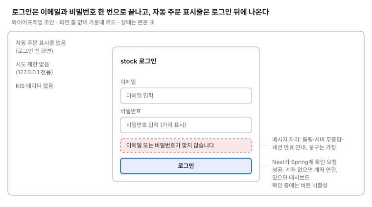

로그인
이메일과 비밀번호로 로그인하고, Next가 암호화된 httpOnly 세션 쿠키를 발급한다.

로그인 전 화면이라 화면 틀(표시줄·메뉴) 없이 가운데 카드 하나에 입력 칸 둘, 실패 메시지 자리, 로그인 버튼만 둔다.
로그인하면 계좌가 없을 때 계좌 연결로, 있을 때 대시보드로 간다. 세션 만료로 온 경우에는 원래 화면으로 돌아간다.
쓰는 공통 UI
없음. 화면 틀을 쓰지 않는 유일한 화면이다.
상태
| 상태 | 보일 것 |
|---|---|
| 처음 | 빈 입력 칸 둘과 로그인 버튼. 메시지 자리는 숨김 |
| 확인 중 | 로그인 버튼 비활성 + "확인 중". 두 번 제출을 막는다 |
| 이메일·비밀번호 틀림 | 메시지 자리에 "이메일 또는 비밀번호가 맞지 않습니다"(문구 가정) |
| 서버 무응답 | Spring이 응답하지 않음. 틀림과 다른 문구 "서버에 연결할 수 없습니다"(문구 가정), 입력값은 남긴다 |
| 세션 만료로 돌아옴 | 카드 위 안내 "세션이 끝났습니다. 다시 로그인하세요"(문구 가정). 로그인하면 원래 화면으로 |
| 성공 | 계좌가 없으면 계좌 연결, 있으면 대시보드 |
화면 규칙
- 보여 줄 것: 이메일, 비밀번호, 로그인 버튼, 실패 메시지
- 데이터: KIS 데이터 없음. 비밀번호 확인은 Next가 Spring에 요청한다
- 주의: 로그인 시도 제한은 두지 않는다(127.0.0.1 전용)